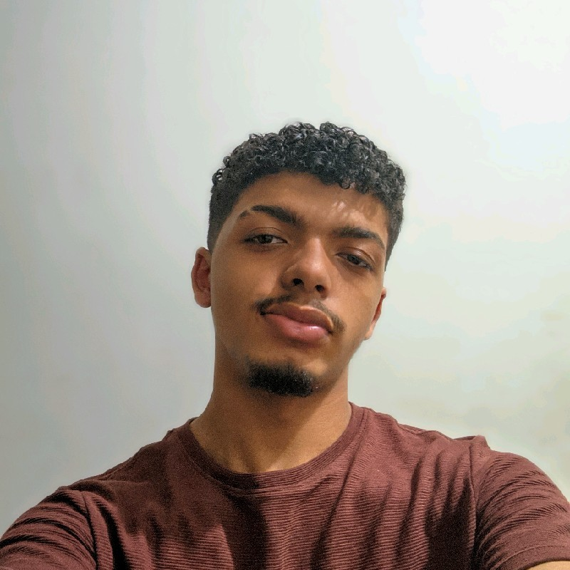

Amante da possibilidade de transformar ideias em realidade através da criação de softwares, com uma paixão especial pela área de desenvolvimento mobile. Estou atualmente em formação na área de Tecnologia da Informação, cursando Sistemas Para Internet na UNIESP. Tenho experiência em Flutter, Dart, Angular, TypeScript, Java, Spring Boot, PostgreSQL, MVC, SOLID, Git e Metodologias Ágeis.